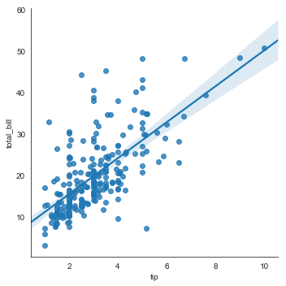
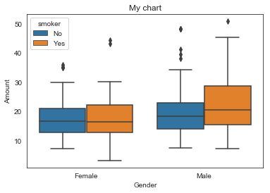
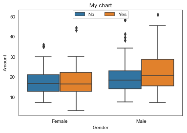

[4]:
import seaborn as sns
[5]:
sns.__version__
[5]:
'0.9.0'
[1]:
import pandas as pd
[2]:
tips = pd.read_csv('99_dataset/tips.csv')
[7]:
tips.head()
[7]:
| total_bill | tip | sex | smoker | day | time | size | |
|---|---|---|---|---|---|---|---|
| 0 | 16.99 | 1.01 | Female | No | Sun | Dinner | 2 |
| 1 | 10.34 | 1.66 | Male | No | Sun | Dinner | 3 |
| 2 | 21.01 | 3.50 | Male | No | Sun | Dinner | 3 |
| 3 | 23.68 | 3.31 | Male | No | Sun | Dinner | 2 |
| 4 | 24.59 | 3.61 | Female | No | Sun | Dinner | 4 |
[8]:
tips.describe()
[8]:
| total_bill | tip | size | |
|---|---|---|---|
| count | 244.000000 | 244.000000 | 244.000000 |
| mean | 19.785943 | 2.998279 | 2.569672 |
| std | 8.902412 | 1.383638 | 0.951100 |
| min | 3.070000 | 1.000000 | 1.000000 |
| 25% | 13.347500 | 2.000000 | 2.000000 |
| 50% | 17.795000 | 2.900000 | 2.000000 |
| 75% | 24.127500 | 3.562500 | 3.000000 |
| max | 50.810000 | 10.000000 | 6.000000 |
[9]:
%matplotlib inline
[11]:
sns.set_style('white')
[14]:
g1 = sns.lmplot(x = 'tip', y = 'total_bill', data = tips)

[15]:
with sns.axes_style("ticks"):
p = sns.boxplot("sex", "total_bill", hue = "smoker", data = tips)
# Thêm title
# Điều chỉnh tên trục
p.set(xlabel = "Gender", ylabel = "Amount", title = "My chart")
sns.despine()
p.legend(loc = 'upper center', ncol = 2, bbox_to_anchor = (0.5, 1.02))
#plt.savefig("seaborn_chart.png")
boxplot = p.get_figure()

[16]:
p = sns.boxplot("sex", "total_bill", hue = "smoker", data = tips)

[18]:
# Thêm title
# Điều chỉnh tên trục
p.set(xlabel = "Gender", ylabel = "Amount", title = "My chart")
[18]:
[Text(16.2,0.5,'Amount'), Text(0.5,16.2,'Gender'), Text(0.5,1,'My chart')]
[20]:
p.get_figure()
[20]:

[21]:
p.legend(loc = 'upper center', ncol = 2, bbox_to_anchor = (0.5, 1.02))
[21]:
<matplotlib.legend.Legend at 0x1645609bcc0>
[23]:
p.get_figure()
[23]:

[24]:
p = sns.boxplot("sex", "total_bill", hue = "smoker", data = tips)
# Thêm title
# Điều chỉnh tên trục
p.set(xlabel = "Gender", ylabel = "Amount", title = "My chart")
sns.despine()
p.legend(loc = 'upper center', ncol = 2, bbox_to_anchor = (0.5, 1.02))
#plt.savefig("seaborn_chart.png")
boxplot = p.get_figure()